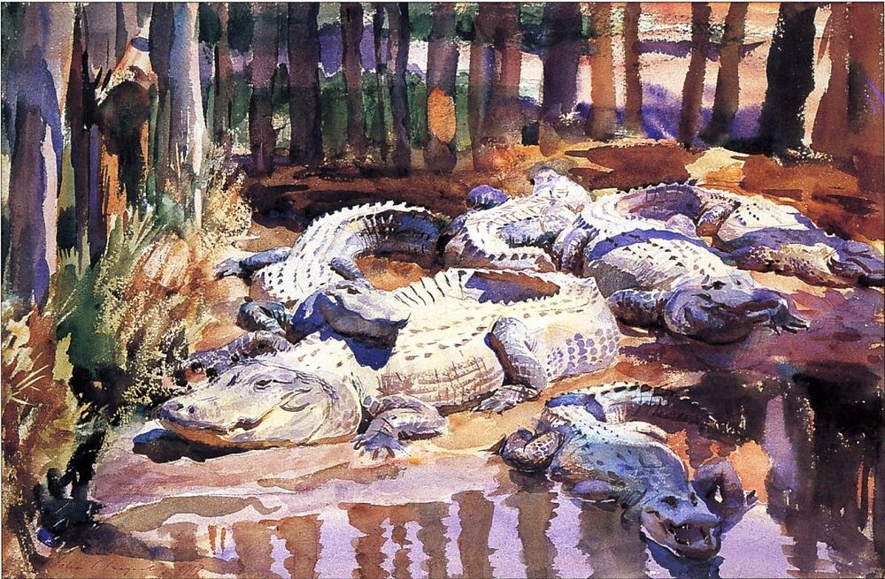
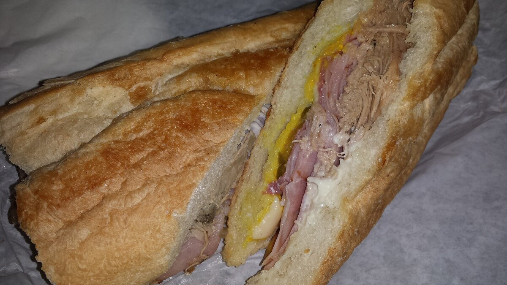

B1 · Travel & Places
Florida Beyond the Theme Parks
One state with five quite different coasts, a national park that is really a river, and the oldest city in the country.
Play the audio and follow along, then read it again on your own. Tap or hover over a highlighted word to see what it means.
Most people arrive in Florida for one of two reasons: the theme parks in Orlando, or a beach. Both are good reasons. But the state is six hundred miles long, and a visitor who only does those two things sees a surprisingly small part of it.
The south is the part that looks least like the rest of the United States. Miami is genuinely bilingual — Spanish is not a minority language there but a working one — and Cuban, Haitian and Colombian communities have shaped the food, the music and the pace of the city. Miami Beach has the art deco district, a few streets of pastel buildings from the 1930s that were nearly demolished in the 1970s and are now the reason a good many people visit. South of the city the road runs out into the Florida Keys, a chain of small islands connected by bridges, ending at Key West, which is closer to Havana than to Miami.
West of Miami is the Everglades, and it is worth understanding what it actually is, because “swamp” is misleading. The Everglades is a river — a sheet of fresh water sixty miles wide and a few inches deep, moving very slowly south through sawgrass toward the sea. It is the only place on earth where alligators and crocodiles both live wild, and the water that flows through it is what the whole of south Florida drinks. It has also been shrinking for a century, drained for farmland and housing, and the long argument about how much of it to restore is one of the most expensive environmental projects anywhere.

Central Florida is the theme parks, and there is no point pretending otherwise: Orlando has Walt Disney World, Universal and SeaWorld within half an hour of each other. But an hour east is the Kennedy Space Center, where launches are still flown, and where you can stand underneath a Saturn V rocket lying on its side — which does more to convey the scale of the thing than any photograph. And an hour north is St Augustine, founded by the Spanish in 1565 and the oldest continuously occupied European settlement in what is now the United States, with a stone fort that has never been taken by force.
The Gulf coast, on the west side, has the calmer water and the better sunsets. Tampa has the cultural weight, and its Ybor City district was built by Cuban and Italian cigar workers in the nineteenth century. Sarasota has the beaches and an unexpected art museum built by a circus owner. Clearwater and St Pete Beach have the sand that appears in the photographs.
The panhandle, in the far northwest, is the part most visitors never reach. The sand there is startlingly white — quartz washed down from the Appalachians over millions of years — and the water is the color that gets it called the Emerald Coast. Pensacola has been under five flags and looks it, and the Gulf Islands National Seashore runs for miles with almost nothing built on it. Inland, the springs are the surprise: dozens of them, feeding clear rivers at a constant twenty-two degrees all year, where you can swim with manatees in winter.
.jpg){kind=link}
As for the food, the honest answer is that Florida's best cooking is not particularly American. It is Cuban, and it is Caribbean. A Cuban sandwich in Tampa is pressed flat and made differently from the Miami version, and people will argue about this at length. The Keys produce conch fritters and key lime pie, which should be pale yellow and never green. On the Gulf coast the grouper is caught locally and served in a sandwich that is much better than it sounds. And the state's oldest restaurant, the Columbia in Ybor City, has been open since 1905 and still serves the Spanish and Cuban dishes it started with.


None of which is an argument against the theme parks. It is an argument for renting a car, because almost everything above is within a day's drive of almost everything else, and the distance between the Florida people imagine and the Florida that exists is mostly a matter of how far you are willing to drive.
Key Vocabulary
- to shape to influence the form something takes
- art deco a decorative style of the 1920s and 1930s with bold geometric shapes
- pastel pale and soft in color
- to demolish to knock a building down deliberately
- chain a connected line of things, such as islands
- actually in fact, really — careful: not 'at the moment'
- misleading giving a wrong impression
- sawgrass a tall sharp-edged marsh plant
- to drain to remove water from land so it can be built on or farmed
- to restore to return something to its earlier condition
- to pretend to act as if something is true when it is not — careful: not to intend or plan
- to convey to communicate a sense of something
- settlement a place where people have established a community
- fort a strong building made to be defended
- panhandle a narrow strip of a state extending out from the main part
- startlingly to a surprising degree
- quartz a hard, usually white mineral
- spring a place where water flows naturally out of the ground
- manatee a large, slow, plant-eating sea mammal
- to press to flatten something under weight or heat
- grouper a large fish common in warm Atlantic waters
Florida Beyond the Theme Parks — B1 · Travel & Places · Renan the Teacher, English Language Academy · https://renangrossi.github.io/englishclasses/reading/b1/usa-restaurants.html
Interactive Exercises
Practice
Complete each exercise, then click Submit to see your score and an explanation for every answer.
Speaking & Writing
Discussion
There are no right answers here — use these to practice speaking, or write a short answer to each.
- The writer says the gap between the Florida people imagine and the one that exists is “mostly a matter of how far you are willing to drive”. Is that true of somewhere you know?
- The Everglades supplies drinking water and has been shrinking for a century. How should a place weigh farmland and housing against that?
- Is it a problem that a region's best food comes from immigrant communities rather than from its “native” cooking?
- The art deco district was nearly knocked down and is now the main attraction. What has your own city nearly lost?
- Write about 150 words persuading someone to visit a part of your country that tourists usually skip.